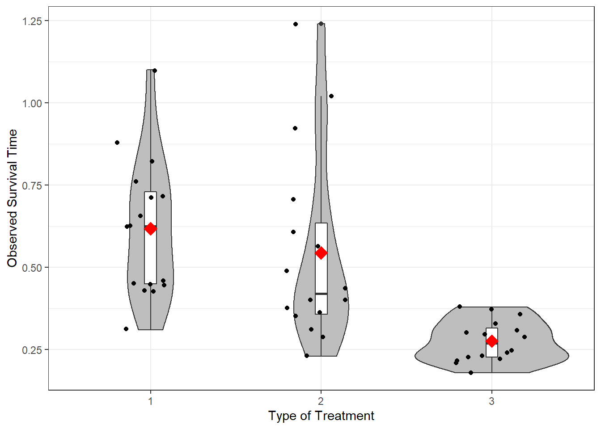
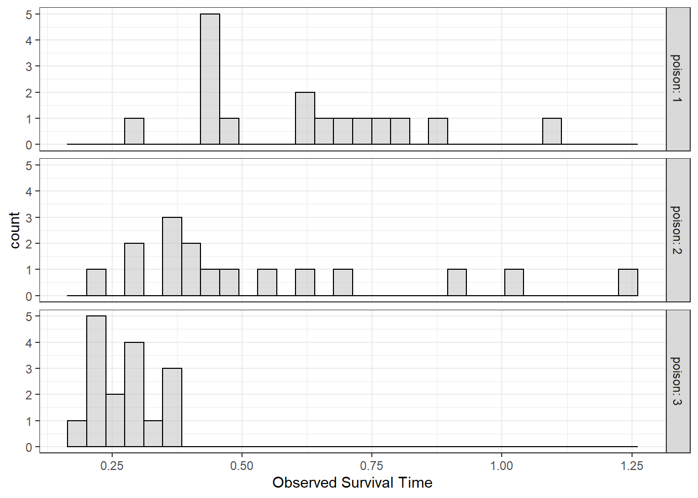
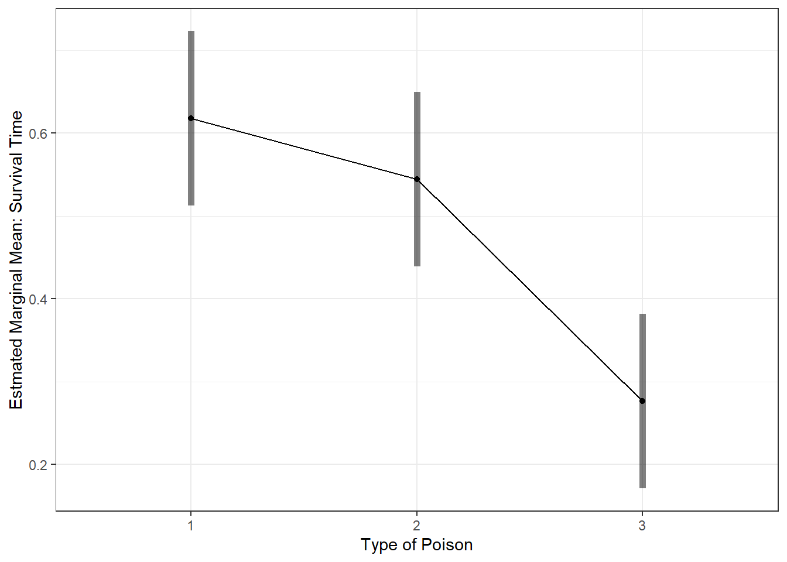
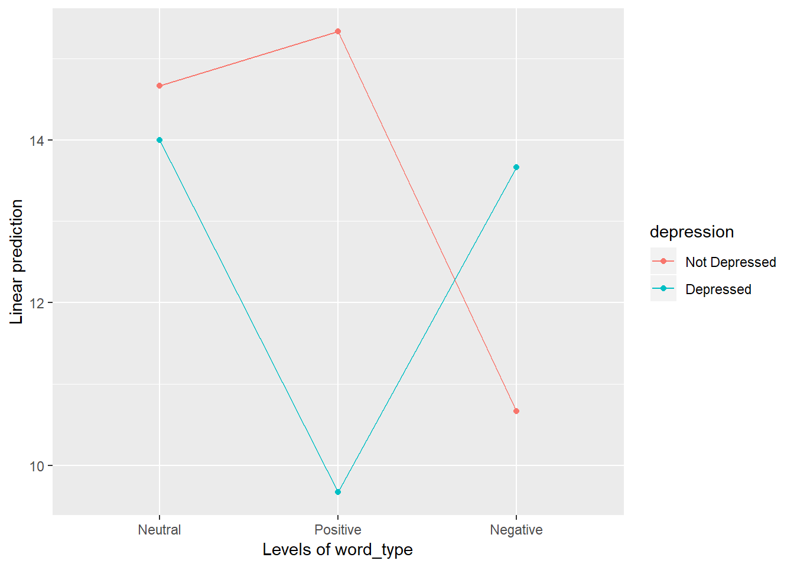
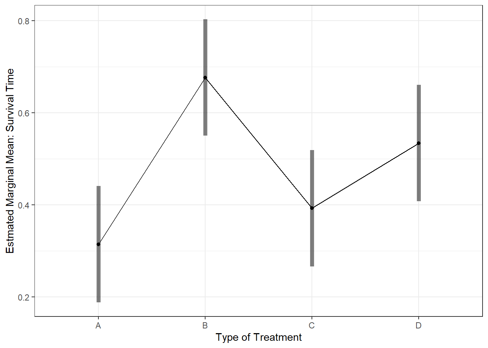
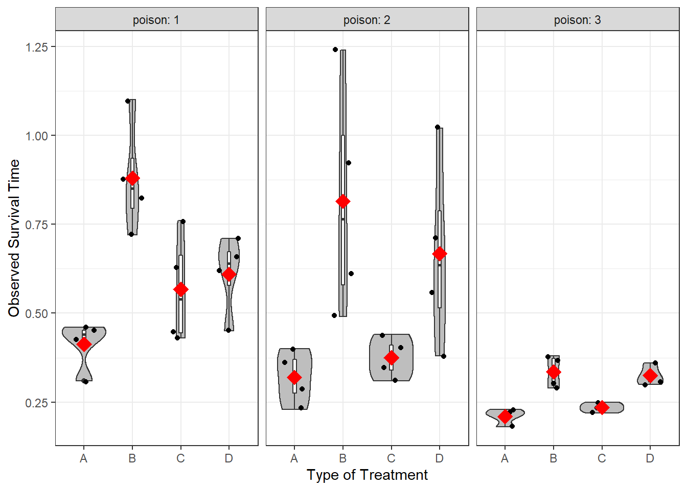
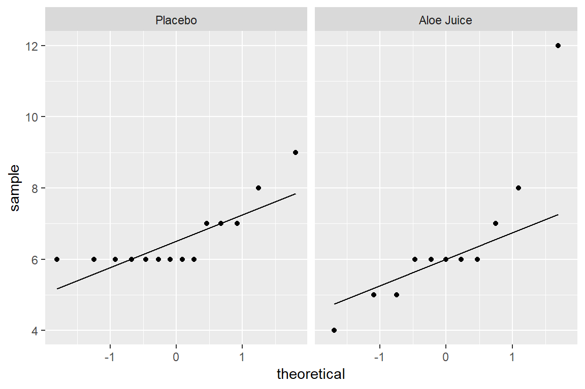
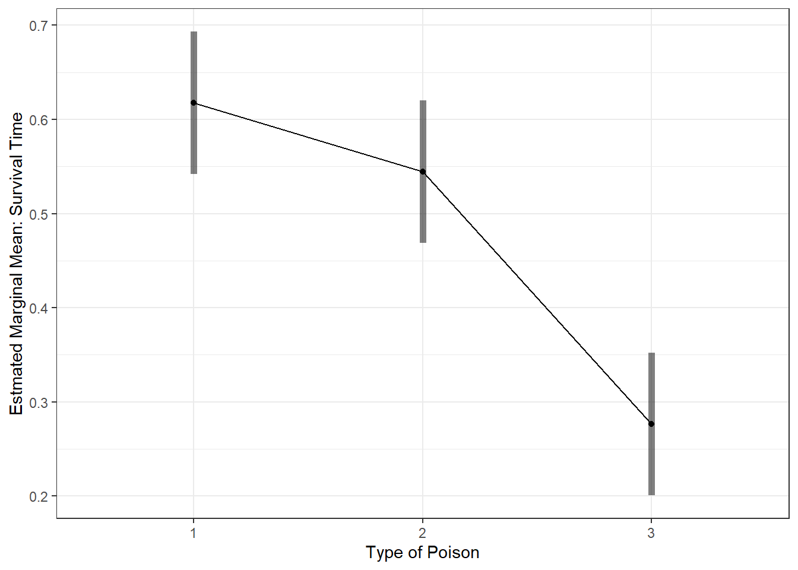
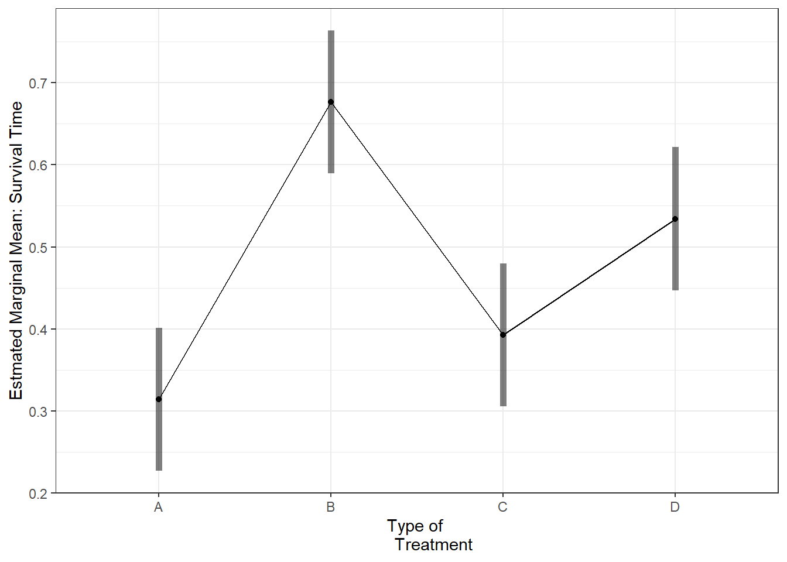

6 Poison Example: 1 & 2-way ANOVA
Required Packages
library(tidyverse) # Loads several very helpful 'tidy' packages
library(furniture) # Nice tables (by our own Tyson Barrett)
library(afex) # Analysis of Factorial Experiments
library(emmeans) # Estimated marginal means (Least-squares means)
library(readxl) # Necessary for reading in an example data set6.1 Prepare for Modeling
6.1.1 Ensure the Data is in “long” Format
https://www.guru99.com/r-anova-tutorial.html
The “poison” dataset contains 48 rows and 4 variables:
- ID: Guinea pig identification number
- Time: Survival time of the animal
- poison: Type of poison used: factor level: 1,2 and 3
- treat: Type of treatment used: factor level: 1,2 and 3
Before you start to compute the ANOVA test, you need to prepare the data as follow:
- Import the data from online
- Rename the “id” variable
- Declare factors: poison type & treatment
PATH <- "https://raw.githubusercontent.com/guru99-edu/R-Programming/master/poisons.csv"
df_survival <- read.csv(PATH) %>%
dplyr::rename(id = X) %>%
dplyr::mutate(poison = factor(poison)) %>%
dplyr::mutate(treat = factor(treat))tibble::glimpse(df_survival)Rows: 48
Columns: 4
$ id <int> 1, 2, 3, 4, 5, 6, 7, 8, 9, 10, 11, 12, 13, 14, 15, 16, 17, 18, …
$ time <dbl> 0.31, 0.45, 0.46, 0.43, 0.36, 0.29, 0.40, 0.23, 0.22, 0.21, 0.1…
$ poison <fct> 1, 1, 1, 1, 2, 2, 2, 2, 3, 3, 3, 3, 1, 1, 1, 1, 2, 2, 2, 2, 3, …
$ treat <fct> A, A, A, A, A, A, A, A, A, A, A, A, B, B, B, B, B, B, B, B, B, …str(df_survival)'data.frame': 48 obs. of 4 variables:
$ id : int 1 2 3 4 5 6 7 8 9 10 ...
$ time : num 0.31 0.45 0.46 0.43 0.36 0.29 0.4 0.23 0.22 0.21 ...
$ poison: Factor w/ 3 levels "1","2","3": 1 1 1 1 2 2 2 2 3 3 ...
$ treat : Factor w/ 4 levels "A","B","C","D": 1 1 1 1 1 1 1 1 1 1 ...6.2 Example 1) Survival Time by Poison Type
6.2.1 Research Question
We want to know if there is a difference between the mean of the survival time according to the type of poison given to the Guinea pig.
6.2.2 Exploratory Data Analysis
6.2.2.1 Summary Statistics
df_survival %>%
dplyr::group_by(poison) %>% # divide into groups
furniture::table1("Survival Time" = time,
digits = 2, # gives M(SD)
na.rm = FALSE,
total = TRUE,
output = "markdown",
caption = "Summary of Survival Time by Type of Poisson Used") | Total | 1 | 2 | 3 | |
|---|---|---|---|---|
| n = 48 | n = 16 | n = 16 | n = 16 | |
| Survival Time | ||||
| 0.48 (0.25) | 0.62 (0.21) | 0.54 (0.29) | 0.28 (0.06) |
6.2.2.2 Plot the Observed Data
df_survival %>%
ggplot(aes(x = poison,
y = time)) +
geom_violin(fill = "gray") +
geom_boxplot(width = .07,
fill = "white") +
geom_jitter(position = position_jitter(0.21)) +
stat_summary(fun = mean,
geom = "point",
shape = 18,
color = "red",
size = 5) +
theme_bw() +
labs(x = "Type of Treatment",
y = "Observed Survival Time") 
6.2.2.3 Interpretation
Things you should notice, but not a firm conclusion yet!
1. SAMPLE BALANCE The sample of 48 guinea pigs is balanced between the three poisons. There are the sample number of animals in each group (n = 16).
2. CENTER = MEANS Guinea pigs given Type 3 poison had shorter survival times (M = 0.28), on average, compared to Type 1 (M = 0.48) and Type 2 (M = 0.54).
3. STREAD = STANDARD DEVIATIONS There was much less variation in survival times among the 16 guinea pics given Type 3 poison (SD = 0.06) compared to the other types (Type 1, SD = 0.21; Type 2, SD = 0.29).
6.2.3 Assumption Checks
6.2.3.1 Independent, Random Samples
The Sample(s) was drawn at random (at least as representative as possible)
- Nothing can be done to fix NON-representative samples!
- Can not for with any statistically test
6.2.3.2 Normality of the DV in each Group
df_survival %>%
ggplot(aes(time)) +
geom_histogram(fill = "gray",
color = "black",
alpha = .5) +
facet_grid(poison ~ .,
labeller = label_both) +
theme_bw() +
labs(x = "Observed Survival Time")
df_survival %>%
ggplot(aes(sample = time)) + # make sure to include "sample = "
geom_qq() + # layer on the dots
stat_qq_line() + # layer on the line
facet_wrap(~ poison, # seperate panels for each group
labeller = label_both) +
theme_bw()
df_survival %>%
psych::describeBy(time ~ poison,
data = .,
mat = TRUE,
digits = 2) item group1 vars n mean sd median trimmed mad min max range skew
time1 1 1 1 16 0.62 0.21 0.62 0.60 0.26 0.31 1.10 0.79 0.57
time2 2 2 1 16 0.54 0.29 0.42 0.52 0.18 0.23 1.24 1.01 1.07
time3 3 3 1 16 0.28 0.06 0.27 0.28 0.07 0.18 0.38 0.20 0.25
kurtosis se
time1 -0.54 0.05
time2 -0.08 0.07
time3 -1.38 0.02df_survival %>%
dplyr::filter(poison == "1") %>% # select one group
dplyr::pull(time) %>% # extract the continuous variable
shapiro.test() # test for normality
Shapiro-Wilk normality test
data: .
W = 0.93235, p-value = 0.2656df_survival %>%
dplyr::group_by(poison) %>%
dplyr::summarise(W.stat = shapiro.test(time)$statistic,
p.value = shapiro.test(time)$p.value)# A tibble: 3 × 3
poison W.stat p.value
<fct> <dbl> <dbl>
1 1 0.932 0.266
2 2 0.853 0.0149
3 3 0.936 0.302 # df_survival %>%
# dplyr::group_by(poison) %>%
# dplyr::summarise(D.stat = ks.test(time)$statistic,
# p.value = ks.test(time)$p.value)df_survival %>%
dplyr::filter(poison == 1) %>%
ks.test(time)
Asymptotic one-sample Kolmogorov-Smirnov test
data: .
D = 63.016, p-value < 2.2e-16
alternative hypothesis: two-sideddf_survival %>%
dplyr::filter(poison == 2) %>%
ks.test(time)
Asymptotic one-sample Kolmogorov-Smirnov test
data: .
D = 63.016, p-value < 2.2e-16
alternative hypothesis: two-sideddf_survival %>%
dplyr::filter(poison == 3) %>%
ks.test(time)
Asymptotic one-sample Kolmogorov-Smirnov test
data: .
D = 63.016, p-value < 2.2e-16
alternative hypothesis: two-sided6.2.3.3 Homogeneity of Variance (HOV)
Levene’s Test of HOV
df_survival %>%
car::leveneTest(time ~ poison,
data = .,
center = "mean") Levene's Test for Homogeneity of Variance (center = "mean")
Df F value Pr(>F)
group 2 8.0941 0.0009937 ***
45
---
Signif. codes: 0 '***' 0.001 '**' 0.01 '*' 0.05 '.' 0.1 ' ' 1Bartlett’s Test of HOV
df_survival %>%
bartlett.test(time ~ poison, data = .)
Bartlett test of homogeneity of variances
data: time by poison
Bartlett's K-squared = 25.88, df = 2, p-value = 2.4e-066.2.4 Fitting One-way ANOVA Model
aov_poison <- df_survival %>%
afex::aov_4(time ~ poison + (1|id),
data = .)6.2.5 Followup-tests
6.2.5.1 Estimated Marginal Means with emmeans::emmeans()
aov_poison %>%
emmeans::emmeans(~ poison) # Calculate Estimated Marginal Means poison emmean SE df lower.CL upper.CL
1 0.618 0.0523 45 0.512 0.723
2 0.544 0.0523 45 0.439 0.650
3 0.276 0.0523 45 0.171 0.382
Confidence level used: 0.95 aov_poison %>%
emmeans::emmip(~ poison,
CIs = TRUE) +
theme_bw() +
labs(x = "Type of Poison",
y = "Estmated Marginal Mean: Survival Time")
6.2.5.2 All Pairwise Comparisons with pairs()
Pairwise post hoc: Fisher’s LSD adjustment for multiple comparisons
aov_poison %>%
emmeans::emmeans(~ poison) %>% # Calculate Estimated Marginal Means
pairs(adjust = "none") # Is each pair signif different? contrast estimate SE df t.ratio p.value
poison1 - poison2 0.0731 0.074 45 0.988 0.3284
poison1 - poison3 0.3412 0.074 45 4.611 <.0001
poison2 - poison3 0.2681 0.074 45 3.623 0.00076.3 Example 2) Survival Time by Treatment Type
6.3.1 Parepare for Analysis
Our objective is to test the following assumption:
H_0: There is no difference in survival time average between group
H_a: The survival time average is different for at least one group.
In other words, you want to know if there is a statistical difference between the mean of the survival time according to the type of treatment given to the Guinea pig.
Variables:
idGuinea pig identification numbertreattreatment type, 4-level IV (independent groups)timesurvival time, continuous DV (Y, outcome)
Note: ignore
poisonfor now
6.3.1.1 Compute Summary Statistics
Second, check the summary statistics for each of the \(k=4\) groups.
# Raw data: summary table
df_survival %>%
dplyr::group_by(treat) %>% # divide into groups
furniture::table1("Survival Time" = time,
digits = 2, # gives M(SD)
na.rm = FALSE,
total = TRUE,
output = "markdown",
caption = "Summary of Survival Time by Type of Treatment Used") | Total | A | B | C | D | |
|---|---|---|---|---|---|
| n = 48 | n = 12 | n = 12 | n = 12 | n = 12 | |
| Survival Time | |||||
| 0.48 (0.25) | 0.31 (0.10) | 0.68 (0.32) | 0.39 (0.17) | 0.53 (0.22) |
Interpretion:
6.3.1.2 Plot the Raw Data
Third, plot the data to eyeball the potential effect. Remember the center line in each box represents the median, not the mean. I have added a red diamond on the mean survival time for each type of poison.
df_survival %>%
ggplot(aes(x = treat,
y = time)) +
geom_violin(fill = "gray") +
geom_boxplot(width = .07,
fill = "white") +
geom_jitter(position = position_jitter(0.21)) +
stat_summary(fun = mean,
geom = "point",
shape = 18,
color = "red",
size = 5) +
theme_bw() +
labs(x = "Type of Treatment",
y = "Observed Survival Time")
6.3.2 Fitting One-way ANOVA Model
aov_treat <- df_survival %>%
afex::aov_4(time ~ treat + (1|id),
data = .)6.3.3 Followup-tests
6.3.3.1 Estimated Marginal Means with emmeans::emmeans()
aov_treat %>%
emmeans::emmeans(~ treat) # Calculate Estimated Marginal Means treat emmean SE df lower.CL upper.CL
A 0.314 0.0628 44 0.188 0.441
B 0.677 0.0628 44 0.550 0.803
C 0.393 0.0628 44 0.266 0.519
D 0.534 0.0628 44 0.408 0.661
Confidence level used: 0.95 aov_treat %>%
emmeans::emmip(~ treat,
CIs = TRUE) +
theme_bw() +
labs(x = "Type of Treatment",
y = "Estmated Marginal Mean: Survival Time")
6.3.3.2 All Pairwise Comparisons with pairs()
Pairwise post hoc: Fisher’s LSD adjustment for multiple comparisons
aov_treat %>%
emmeans::emmeans(~ treat) %>% # Calculate Estimated Marginal Means
pairs(adjust = "none") # Is each pair signif different? contrast estimate SE df t.ratio p.value
A - B -0.3625 0.0888 44 -4.080 0.0002
A - C -0.0783 0.0888 44 -0.882 0.3827
A - D -0.2200 0.0888 44 -2.476 0.0172
B - C 0.2842 0.0888 44 3.198 0.0026
B - D 0.1425 0.0888 44 1.604 0.1159
C - D -0.1417 0.0888 44 -1.595 0.11806.4 Example 3) Survival Time by Both Poisson & Treatment Type
6.4.1 Parepare for Analysis
Our objective is to test the following assumption:
H_0: There is no difference in survival time average between group
H_a: The survival time average is different for at least one group
In other words, you want to know if there is a statistical difference between the mean of the survival time according to BOTH type of poisons and treatment given to the Guinea pig.
Variables:
idGuinea pig identification numberpoisonpoison type, 3-level IV (independent groups)treattreatment type, 4-level IV (independent groups)timesurvival time, continuous DV (Y, outcome)
6.4.1.1 Compute Summary Statistics
Second, check the summary statistics for each of the \(k\) groups.
df_survival %>%
dplyr::group_by(treat, poison) %>% # divide into groups
dplyr::summarise(n = n(),
mean = mean(time),
sd = sd(time)) %>%
gt::gt(caption = "Summary of Survival Time by Type of Treatment Used")| poison | n | mean | sd |
|---|---|---|---|
| A | |||
| 1 | 4 | 0.4125 | 0.06946222 |
| 2 | 4 | 0.3200 | 0.07527727 |
| 3 | 4 | 0.2100 | 0.02160247 |
| B | |||
| 1 | 4 | 0.8800 | 0.16083117 |
| 2 | 4 | 0.8150 | 0.33630343 |
| 3 | 4 | 0.3350 | 0.04654747 |
| C | |||
| 1 | 4 | 0.5675 | 0.15671099 |
| 2 | 4 | 0.3750 | 0.05686241 |
| 3 | 4 | 0.2350 | 0.01290994 |
| D | |||
| 1 | 4 | 0.6100 | 0.11284207 |
| 2 | 4 | 0.6675 | 0.27097048 |
| 3 | 4 | 0.3250 | 0.02645751 |
6.4.1.2 Plot the Raw Data
Third, plot the data to eyeball the potential effect. Remember the center line in each box represents the median, not the mean. I have added a red diamond on the mean survival time for each type of poison.
df_survival %>%
ggplot(aes(x = treat,
y = time)) +
geom_violin(fill = "gray") +
geom_boxplot(width = .07,
fill = "white") +
geom_jitter(position = position_jitter(0.21)) +
stat_summary(fun = mean,
geom = "point",
shape = 18,
color = "red",
size = 5) +
theme_bw() +
labs(x = "Type of Treatment",
y = "Observed Survival Time") +
facet_wrap(~ poison, labeller = label_both)
6.4.1.3 Assumption Check: Normality
df_survival %>%
ggplot(aes(time)) +
geom_density(fill = "gray",
alpha = .5) +
facet_grid(treat ~ poison,
labeller = label_both) +
theme_bw() +
labs(x = "Observed Survival Time")
6.4.1.4 Assumption Check: HOV
Levene’s Test of HOV
df_survival %>%
car::leveneTest(time ~ treat*poison,
data = .,
center = "mean") Levene's Test for Homogeneity of Variance (center = "mean")
Df F value Pr(>F)
group 11 4.8535 0.0001442 ***
36
---
Signif. codes: 0 '***' 0.001 '**' 0.01 '*' 0.05 '.' 0.1 ' ' 16.4.2 Fitting Two-way ANOVA Model
aov_survival2 <- df_survival %>%
afex::aov_4(time ~ poison*treat + (1|id),
data = .)6.4.2.1 Basic Output - stored name of model
aov_survival2Anova Table (Type 3 tests)
Response: time
Effect df MSE F ges p.value
1 poison 2, 36 0.02 23.22 *** .563 <.001
2 treat 3, 36 0.02 13.81 *** .535 <.001
3 poison:treat 6, 36 0.02 1.87 .238 .112
---
Signif. codes: 0 '***' 0.001 '**' 0.01 '*' 0.05 '+' 0.1 ' ' 16.4.2.2 Fuller Output - add $Anova on model name
aov_survival2$AnovaAnova Table (Type III tests)
Response: dv
Sum Sq Df F value Pr(>F)
(Intercept) 11.0304 1 495.9194 < 2.2e-16 ***
poison 1.0330 2 23.2217 3.331e-07 ***
treat 0.9212 3 13.8056 3.777e-06 ***
poison:treat 0.2501 6 1.8743 0.1123
Residuals 0.8007 36
---
Signif. codes: 0 '***' 0.001 '**' 0.01 '*' 0.05 '.' 0.1 ' ' 16.4.3 Followup-tests
6.4.3.2 All Pairwise Comparisons for Main Effects of Poison
aov_survival2 %>%
emmeans::emmeans(~ poison) %>% # Calculate Estimated Marginal Means
pairs(adjust = "none") # Is each pair signif different? contrast estimate SE df t.ratio p.value
poison1 - poison2 0.0731 0.0527 36 1.387 0.1740
poison1 - poison3 0.3412 0.0527 36 6.472 <.0001
poison2 - poison3 0.2681 0.0527 36 5.085 <.0001
Results are averaged over the levels of: treat aov_survival2 %>%
emmeans::emmip( ~ poison,
CIs = TRUE) +
theme_bw() +
labs(x = "Type of Poison",
y = "Estmated Marginal Mean: Survival Time")
6.4.3.3 All Pairwise Comparisons for Main Effects of Treatment
aov_survival2 %>%
emmeans::emmeans(~ treat) %>% # Calculate Estimated Marginal Means
pairs(adjust = "tukey") # Is each pair signif different? contrast estimate SE df t.ratio p.value
A - B -0.3625 0.0609 36 -5.954 <.0001
A - C -0.0783 0.0609 36 -1.287 0.5772
A - D -0.2200 0.0609 36 -3.613 0.0049
B - C 0.2842 0.0609 36 4.667 0.0002
B - D 0.1425 0.0609 36 2.340 0.1077
C - D -0.1417 0.0609 36 -2.327 0.1108
Results are averaged over the levels of: poison
P value adjustment: tukey method for comparing a family of 4 estimates aov_survival2 %>%
emmeans::emmip( ~ treat,
CIs = TRUE) +
theme_bw() +
labs(x = "Type of
Treatment",
y = "Estmated Marginal Mean: Survival Time")